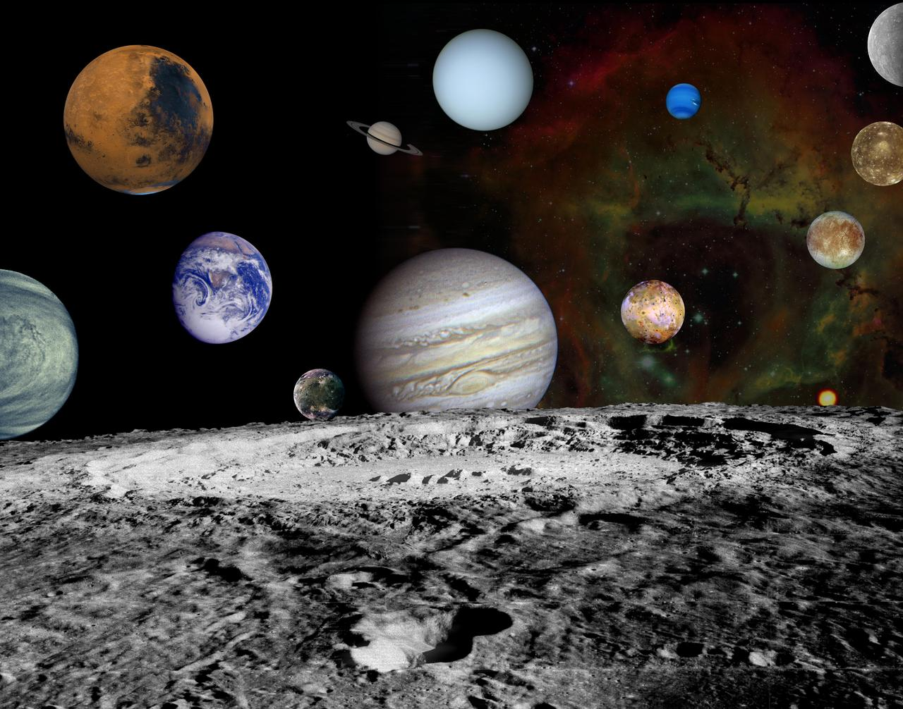

Galaksilerde yolculuk yap, gezegenlerde mola ver!

Sistemimiz şu anda aktiftir. NASA motoru üzerinden gezegenleri döndürmek ve keşfe başlamak için aşağıdaki butona tıklayarak tam ekran moduna geçiş yapın.